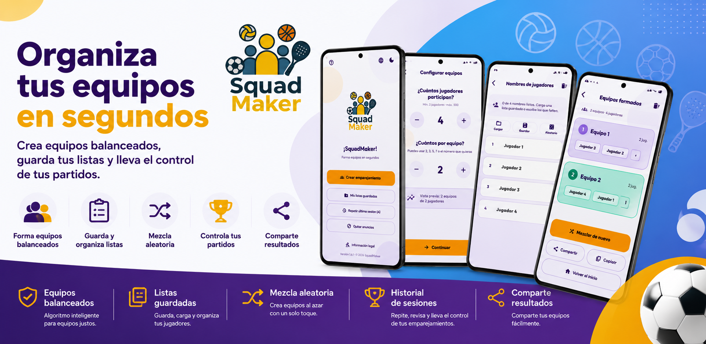

👥
Equipos balanceados
Distribuye a tus jugadores de manera práctica para formar equipos organizados y competitivos.
Crea equipos balanceados o aleatorios, guarda tus listas, organiza jugadores, controla tus sesiones y comparte los resultados desde una sola aplicación.

SquadMaker facilita la creación de equipos para partidos, entrenamientos, torneos, actividades escolares y reuniones.
Distribuye a tus jugadores de manera práctica para formar equipos organizados y competitivos.
Genera equipos al azar con un solo toque y vuelve a mezclar cuando lo necesites.
Guarda, carga y reutiliza tus listas de jugadores para ahorrar tiempo en futuras sesiones.
Conserva un historial de tus emparejamientos y consulta nuevamente los equipos creados.
Comparte los equipos con tus amigos, jugadores o compañeros de forma rápida.
Utiliza la aplicación cómodamente de día o de noche con una interfaz moderna y agradable.
No necesitas registros complicados. Solo agrega a tus jugadores, selecciona la configuración y deja que SquadMaker haga el resto.
Escribe los nombres o carga una lista guardada anteriormente.
Selecciona cuántos jugadores participarán y cuántos habrá por equipo.
Crea equipos balanceados o utiliza el modo aleatorio.
Conserva la sesión, copia los equipos o comparte los resultados.
Utiliza SquadMaker para organizar partidos, entrenamientos, torneos, actividades escolares y reuniones de amigos.
Descarga SquadMaker y crea equipos en segundos. Ideal para jugadores, entrenadores, maestros, organizadores y grupos de amigos.
Descargar SquadMaker